OnionRTC-experiment
This project is a collection of the documentation, tools and scripts used for the experiment done in the DTU master project "Improving anonymity in the use of TURN servers" by Jonas T. Thomsen (s174867) and Christian A. S. Mark (s164833).
The project is about investigating performance and usability of onion routing technologies like Tor, I2P and Lokinet for proxying WebRTC traffic.
General overview of the experiment
The experiment is visuallized in the diagram below and are made up of several hosts and components. The application services are a collection of WebRTC specific infrastructure and central components, which enables hosting a WebRTC application, logging facilities, connection candidate signalling and "Traversal Using Relays around NAT" (TURN). These services are required for the experiment, and are hosted facing the public internet (Links to specific software packages can see in the next chapter with a small description).
Each communication line is explained here:
- Central Control server communicate with the two client hosts that they should start the experiment.
- Central Control server signals to the logging server, that a test is starting with the two clients.
- The two clients goes to https://thomsen-it.dk and contacts the web server. A website is served, which the clients use to access a meeting room where they wait.
- Both of the clients contacts the signalling server, upgrades the connection to a WebSocket connection and start the discovery and negotiation process. Both clients start the ICE (Interactive Connectivity Establishment) protocol to exchange networking options and exchange session descriptors using SDP (Session Description Protocol). Both clients are setup to only use TURN over tcp, so they both exchange ICE candidates using the TURN server.
- To start sending video and audio data, both clients contacts the TURN server and gets allocated their own TCP communication port. The two clients will now be connected through the TURN server, which acts as a relay and sends data to each client. The data being send is rtp and rtcp, which is wrapped in encrypted tcp/TLS.
- Last but not least, all the statistics gathered from the WebRTC clients is sent to the logging server. This include: timestamps, RTT, jitter, packetloss, and other metrics.

Software used for the experiment
This table contains a component name, software package/reporsitory, a description and a link for getting the software.
| Component name | Used for | software package/reporsitory | Link(s) |
|---|---|---|---|
| Web server | Hosting a website serving HTML and javascript to facilitate/bootstrap a WebRTC session. | Simple WebRTC | https://github.com/Master2022E/simple-webrtc |
| TURN server | Providing "Traversal Using Relays around NAT" for WebRTC clients behind a strict NAT.. | coturn | https://github.com/coturn/coturn |
| Signalling server | Provides clients of the Web server ability to plan and exchange connection/communication information. | Signal Server | https://github.com/Master2022E/SignalServer |
| Central control server | Python server that start the experiment by talking to the two client hosts and logging server. | Python library Fabric | https://www.fabfile.org/ |
| Logging server | Provide a central logging endpoint for "Central control server" and WebRTC clients. | ObserveRTC and MongoDB for database | https://github.com/ObserveRTC/observer and https://github.com/ObserveRTC/full-stack-examples (for deployment) |
| Onion routing (Tor) | Provide an anonymity proxy through the TOR network, which tunnels all HTTPs and WebRTC traffic. | Tor | https://support.torproject.org/apt/#tor-deb-repo |
| Onion routing (Lokinet) | Provide an anonymity proxy through the Lokinet network, which tunnels all IP traffic through LLARP (Low-Latency Anonymous Routing Protocol). | Lokinet | https://docs.oxen.io/products-built-on-oxen/lokinet/guides/linux-gui-install-guide |
| Host browser | Browser automation tool that will start a WebRTC session on a client host. It is activated by the Central control server and send its logs to the logging server. | Selenium | https://www.selenium.dev/ |
Development details
To run the current test run make. this will install the python dependencies and execute the pytest suite.
NOTE: The host is currently static, could use
thomsen-it.dk,localhostorhost.docker.internaldepending on the situation reference link.
Experiment details
Take your TURN.
Running the OnionRTC project
Setting up the machine
The project has been verified, run and tested on a Ubuntu 22.04.1 LTS VM, with 4-8GB RAM and 2-3 CPU cores.
See the scripts in the client script folder to get an idea of what dependencies are needed.
See Deployment folder for diagrams, explanations and Ansible scripts.
Fake video and audio stream
To simulate a Video and audio call, we create a fake webcam and microphone, which the browser can get as a input stream and use for the WebRTC stream/application. See the scripts in the client script folder for setting it up in ubuntu.
To make sure that the selenium script uses the correct "fake" microphone, we need to make sure that any other microphone is disabled. In the VM running ubuntu it can be done by following the solution here, by blacklisting "snd_hda_intel".
Selenium
Install python requirements and the geckodriver by following the instructions
Development
When developing in a VM with ssh in vs code, you can enable x11 Forwarding, by running an ssh session in another terminal window by running the command:
ssh -X user@VM
Tor and Firefox setup for testing
The client should have installed and setup a running instance of tor. See the script setup_tor.sh for ubuntu instructions
We also need to install firefox, which the geckodriver uses. This should also be in the script.
Now the following command should show the install path of firefox:
$ which firefox
/usr/bin/firefox
Because of the possible privacy leaks in using STUN and WebRTC, WebRTC has been disabled from the Tor Browser. So the project uses the firefox Browser, and sets the proxy settings to point at the local Tor proxy. A ff addon is needed for quick access to setting the Tor proxy. The addon simply adds a button for toggling the tor proxy on and off. This can be used when testing manually in the browser.

When setting up the addon, it will ask for permisson to also run in "Private Window", press Allow and press Okay.

When the addon has been added, you simply need to press start and wait for the "Connected to 127.0.0.1:9050" message. Now you are connected to the Tor network.

Deployment details
Here is the information for deploying the entire application stack
In the figure below are there an overview of the four servers, and what applications runs where. The "backend" infrastructure runs on host A and B.
The deployment of host A, B, C and D can be seen in the sub folders:
The Deployment diagram describes the server deployment structure that we expect to deploy and run the tests with.
{kind=link}

SSH Access to the hosts
To access the hosts the following ssh commands can be used
# C Clients
ssh -J agpbruger@c.thomsen-it.dk:22022 -X agpbruger@10.3.0.1 -p 22022 -o StrictHostKeyChecking=no
ssh -J agpbruger@c.thomsen-it.dk:22022 -X agpbruger@10.3.0.2 -p 22022 -o StrictHostKeyChecking=no
ssh -J agpbruger@c.thomsen-it.dk:22022 -X agpbruger@10.3.0.3 -p 22022 -o StrictHostKeyChecking=no
ssh -J agpbruger@c.thomsen-it.dk:22022 -X agpbruger@10.3.0.4 -p 22022 -o StrictHostKeyChecking=no
ssh -J agpbruger@c.thomsen-it.dk:22022 -X agpbruger@10.3.0.5 -p 22022 -o StrictHostKeyChecking=no
ssh -J agpbruger@c.thomsen-it.dk:22022 -X agpbruger@10.3.0.6 -p 22022 -o StrictHostKeyChecking=no
# D Clients
ssh -J agpbruger@d.thomsen-it.dk:22022 -X agpbruger@10.4.0.1 -p 22022 -o StrictHostKeyChecking=no
ssh -J agpbruger@d.thomsen-it.dk:22022 -X agpbruger@10.4.0.2 -p 22022 -o StrictHostKeyChecking=no
ssh -J agpbruger@d.thomsen-it.dk:22022 -X agpbruger@10.4.0.3 -p 22022 -o StrictHostKeyChecking=no
ssh -J agpbruger@d.thomsen-it.dk:22022 -X agpbruger@10.4.0.4 -p 22022 -o StrictHostKeyChecking=no
ssh -J agpbruger@d.thomsen-it.dk:22022 -X agpbruger@10.4.0.5 -p 22022 -o StrictHostKeyChecking=no
ssh -J agpbruger@d.thomsen-it.dk:22022 -X agpbruger@10.4.0.6 -p 22022 -o StrictHostKeyChecking=no
Node Exporter
All hosts runs a node exporter on port 9100. The server A will create connection to the hosts via a ssh port forward, to all the clients in service files. See the setup in the playbooks asetupNodeExporter and setupNodeExporterPortForward
Ansible
This document describes how to setup Ansible and the plays which is implemented.
The complete list of servers and names can be found in inventory.yaml but can be summarized to:
- server-[a-d]
- clients
- c_clients
- c[1-6]
- d_clients
- d[1-6]
- c_clients
And can be called by group, list or individually.
Installation and setup
Read the getting started documentation or just install with python -m pip install --user ansible
If WSL is used it might be required to set the environment variable ANSIBLE_CONFIG to the current directory for it to find the inventory file. Set it with: export ANSIBLE_CONFIG=$PWD
There are some plays which requires some updated versions of external collections install them with ansible-galaxy collection install -r Further information can be found in the documentation.
NOTE: the requirements installation have not been tested yet.
NOTE: All commands is expected to be run from this directory.
Testing the setup
Example commands for testing that ansible is working:
# Check the ram usage of the the server A with
ansible server-a -a "free -h"
# Check the hostname of the server
ansible server-c -m ansible.builtin.setup -a "filter=ansible_hostname"
# Reboot all clients
ansible clients -a "reboot now" -K --become
SSH setup
The client servers are by default accessible through password base authentication, but it can be disabled across all the clients with the following command.
ansible-playbook playbooks/setupSecureSSH.yaml
SSH keys
The key were generated with:
mkdir -p ./playbooks/files/.ssh/
ssh-keygen -f ./playbooks/files/.ssh/id_ecdsa -t ecdsa -b 521 -q -N "" -C Deployment
The public key is also added to GitHub
To send the keys to the remote hosts. (Client hosts C1-C6 and D1-D6) run the command
ansible-playbook playbooks/setupSSHKeys.yaml
Hostname setup
When browsing the servers it can sometimes be hard to know with certainty which server one is using. Therefor we have the hostname's of the servers defined in the inventory list where the hostname can be set for each server.
Beware that it will reboot the host!
ansible-playbook playbooks/setupHostname.yaml -K
Setup APT Package Dependencies
Play which installs the required apt dependencies.
ansible-playbook playbooks/setupPackageDependencies.yaml -K
Setup Big Buck Bunny
NOTE: Must be run after the git repository have been fetch, else it will fail or need the force option.
ansible-playbook playbooks/setupBigBuckbunny.yaml
After this the movie is accessible in ~/OnionRTC-experiment/client_scripts/BigBuckBunny.mp4.
Git pull and install Pip requirements
To pull the latest code the ssh keys must be distributed first. Afterwards it is possible to pull the latest version of the main branch. The script will also install the pip requirements defined in the requirements file located in the root folder.
ansible-playbook playbooks/updateGit.yaml
The code will be located in /home/agpbruger/OnionRTC-experiment/
CPU status information
Play which will display top four cpu processes running and how much CPU it consumes.
ansible-playbook playbooks/readCPU.yaml --limit c1
NOTE: The -l or --limit flag is currently required and could be:
clients,all,c1or any other host/group.
Get client logs
To allow the developers to more easily locate errors the clients will output logging to a file, which then can be reviewed either on the server or locally pulled with a playbook.
ansible-playbook playbooks/getLogs.yaml --limit "c2,d2"
The logs will here after be located in ./playbooks/logs/c2/debug.log and ./playbooks/logs/d2/debug.log.
Check for video device
To check if the video is running on all hosts:
ansible-playbook playbooks/checkForVideoDevice.yaml
Check servers ready
Verify that all clients is ready to run, by checking if the services is started and enabled.
The script is still a work in progress.
- Tor
- Lokinet [TODO]
- Webcam [TODO]
ansible-playbook playbooks/checkClientsReady.yaml
Host A - Application server
The purpose of the server is to coordinate the tests which will be executed, Store the logs and statuses of the tests and do data processing of the results.
Setup
To control the services are there in each of the sub folder an example .env file which contains the environment variables which is needed for the respective services to run.
When the .env files have been configured, the service can be controlled with the makefile.
$ make
Options include:
upload - Uploads the local configuration files
start - Starts the services from docker-compose
stop - Stops the services from docker-compose
restart - Stops and starts the services.
status - Get the status of the services
pull - Pulls the latest images of the services
logs - Get the latest 20 logs and follows the next logs
ssh - Gets an ssh shell on the server
Caddy
Caddy is a reverse proxy that can handle TLS certificates and pass the raw TCP socket data to the respective applications.
WebRTC
The React application which the clients will use to facilitate a call.
Signal
The signaling server that coordinates the clients when they join specific rooms.
ObserveRTC
ObserveRTC is a backend for receiving statistics of WebRTC streams.
MongoDB
The MonogDB database will stores the records saved by ObserveRTC and where we can query data for our notebook scripts.
To access the database from a developer machine one needs to make a local ssh port forward to the server.
ssh -TNL 27017:127.0.0.1:27017 agpbruger@db.thomsen-it.dk -p 22022
Grafana
Grafana in combination with Prometheus and Node Exporter could give some easy insights to the load of the server.
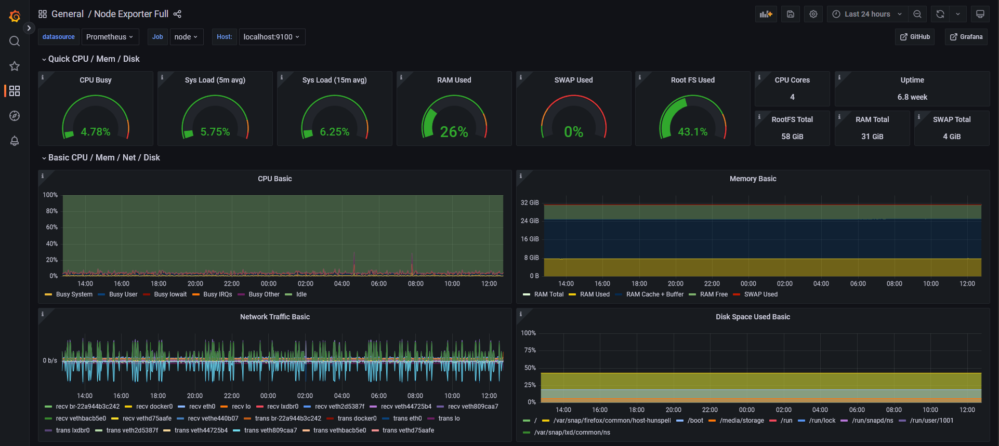
To access Grafana run a shell with the command below and then access it on localhost:4000
ssh -TNL 4000:127.0.0.1:4000 agpbruger@a.thomsen-it.dk -p 22022
Initial setup
To run the applications on the server are the applications docker and docker-compose needed.
Firewall
Some applications are not meant to be exposed to the internet. Therefor is the the application ufw used to manage iptables on the server. The following ufw rules is used
sudo ufw allow 22022 comment 'Allow SSH connections'
sudo ufw allow 443 comment 'HTTPS connections'
sudo ufw allow 80 comment 'HTTP redirected to HTTPS'
sudo ufw allow 3000 comment 'Signaling websocket server'
This gives the configuration like shown below.
sudo ufw status
Status: active
To Action From
-- ------ ----
22022 ALLOW Anywhere # Allow SSH connections
80 ALLOW Anywhere # HTTP redirected to HTTPS
443 ALLOW Anywhere # HTTPS connections
3000 ALLOW Anywhere # Signaling websocket server
22022 (v6) ALLOW Anywhere (v6) # Allow SSH connections
80 (v6) ALLOW Anywhere (v6) # HTTP redirected to HTTPS
443 (v6) ALLOW Anywhere (v6) # HTTPS connections
3000 (v6) ALLOW Anywhere (v6) # Signaling websocket server
FIXME: Add a option to allow machines from Host C and Host D to access the mongodb server. link with example of how to allow specific ips and ports access.
Host B - Turn server
The purpose of the server is to host a Turn server that clients can use as a middel-man when having a online call.
Setup
The folder coturn has an example configuration file. When the configuration file files have been configured, the service can be controlled with the makefile.
$ make
Options include:
upload - Uploads the local configuration files
start - Starts the services from docker-compose
stop - Stops the services from docker-compose
restart - Stops and starts the services.
status - Get the status of the services
pull - Pulls the latest images of the services
logs - Get the latest 20 logs and follows the next logs
ssh - Gets an ssh shell on the server
Services
coturn
coturn is an open source implementation of a TURN server.
Node Exporter
TODO and might not happen. Will maybe be a weekend project. Node Exporter could give some easy insights to the load of the server. would be accessible on Host A.
Initial setup
To run the application on the server are the applications docker and docker-compose needed.
Firewall
The turn service needs a lot of different ports opened to run the following rules is used
sudo ufw allow 22022 comment 'Allow SSH connections'
sudo ufw allow 3478 comment 'Turn'
sudo ufw allow 49152:65535/udp comment 'Turn'
This gives the configuration like shown below.
sudo ufw status
Status: active
To Action From
-- ------ ----
22022 ALLOW Anywhere # Allow SSH connections
3478 ALLOW Anywhere # Turn
49152:65535/udp ALLOW Anywhere # Turn
22022 (v6) ALLOW Anywhere (v6) # Allow SSH connections
3478 (v6) ALLOW Anywhere (v6) # Turn
49152:65535/udp (v6) ALLOW Anywhere (v6) # Turn
Host C and D - Router
The purpose of the two routers is to act as a gateway for their respective clients C1-6 and D1-6, so they can access the internet. Furthermore, the routers are responsible for port forwarding SSH connection to the clients so we can communicate and control the clients.
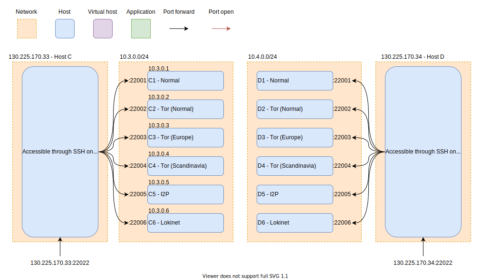
Firewall Setup
- For setting up the router, the following steps are needed: We start by adding an ufw rule to allow the ssh connection to the router (We use port 22022).
sudo ufw allow 22022 comment 'Allow SSH connections'
This gives the configuration like shown below.
sudo ufw status
Status: active
To Action From
-- ------ ----
22022 ALLOW IN Anywhere
22022 (v6) ALLOW IN Anywhere (v6)
- Change forwarding policy of packets on the host:
sudo nano /etc/default/ufw
# Change the line `DEFAULT_FORWARD_POLICY="DROP"` to `DEFAULT_FORWARD_POLICY="ACCEPT"`
- Allow Ipv4 forwarding of packets on the host:
sudo nano /etc/ufw/sysctl.conf
# Uncomment this line `net/ipv4/ip_forward=1`
- Change UFW rules to do ssh port forwarding to each host:
sudo nano /etc/ufw/before.rules
# nat Table rules
*nat
:POSTROUTING ACCEPT [0:0]
# Forward traffic from eth1 through eth0.
-A POSTROUTING -s 10.x.0.0/24 -o eth0 -j MASQUERADE
-A PREROUTING -i eth0 -d 130.225.170.x -p tcp --dport 22001 -j DNAT --to-destination 10.x.0.1:22022
-A PREROUTING -i eth0 -d 130.225.170.x -p tcp --dport 22002 -j DNAT --to-destination 10.x.0.2:22022
-A PREROUTING -i eth0 -d 130.225.170.x -p tcp --dport 22003 -j DNAT --to-destination 10.x.0.3:22022
-A PREROUTING -i eth0 -d 130.225.170.x -p tcp --dport 22004 -j DNAT --to-destination 10.x.0.4:22022
-A PREROUTING -i eth0 -d 130.225.170.x -p tcp --dport 22005 -j DNAT --to-destination 10.x.0.5:22022
-A PREROUTING -i eth0 -d 130.225.170.x -p tcp --dport 22006 -j DNAT --to-destination 10.x.0.6:22022
# don't delete the 'COMMIT' line or these nat table rules won't be processed
COMMIT
- Restart UFW
sudo ufw disable && sudo ufw enable
- Verify by sshing into the client using the port forwarded port specificed in the before.rules file.
ssh user@ip -p 22001
- The forwarding and port forwarding rules should now be setup.
Host C and D - Client
The purpose of the client is to act as a client for the application. The client is responsible for connecting to the TURN server and the application server. Furthermore, the client is responsible for sending and receiving media. They are controlled by the "C&C" server over ssh and needs internet access.
Setup
Each client has a specific enviroment setup, which is described in the client scripts folder as small scripts.
The client setup can be divided into two parts. The first part is responsible for setting up the client with a fake webcam running a test video with audio. The other part consist of the client environment variables, setting up the anonimity network connection and lastly the firefox browser setup, used by Selenium.
Webcam setup
NOTE: TODO
Client environment variables
NOTE: TODO
Anonimity network connection setup
NOTE: TODO
Firefox browser setup
NOTE: TODO
Firewall Setup
The clients just need to have the ssh port open to be able to connect to the router. This is done by adding the following rule to the ufw firewall.
sudo ufw allow 22022 comment 'Allow SSH connections'
This gives the configuration like shown below.
sudo ufw status
Status: active
To Action From
-- ------ ----
22022 ALLOW IN Anywhere
22022 (v6) ALLOW IN Anywhere (v6)
Command and Control
The program will be in charge of staring the tests between clients.
Setup
The program will run on server A, see the Deployment diagram.
To allow local development with connections to the Mongo database, it is needed to create a local port forward.
ssh -fTNL 27017:localhost:27017 agpbruger@db.thomsen-it.dk -p 22022
# or
ssh -L 27017:127.0.0.1:27017 agpbruger@db.thomsen-it.dk -p 22022
Build
docker-compose build
Start the service
docker-compose up -d
Release
To release the image it is possible to publish to docker hub with the following command and it will update the tag of latest image and the verison number.
make publish username=foo version=v0.0.0
Data processing
This Readme describes how to get started with the data processing and shows the results of the experiment.
Data Access
To get access to the data please read the DataAccess document.
Scenario list
To shorten some of the naming, the plots follow the abbreviation scheme the individual clients (c1-c6 and d1-d6) is configured to the specific setup.
| Networking type | abbreviation |
|---|---|
| Normal | Norm |
| Tor (Normal) | TorN |
| Tor (Europe) | TorE |
| Tor (Scandinavia) | TorS |
| Lokinet | Loki |
The following tabels are the different scenarios which is being tested. Here c1 referees to the client c1, which can be seen in the Deployment documentation.
One to one
| Name | Setup |
|---|---|
| 01 Norm-Norm | Alice, Norm(c1) → Turn ← Norm(d1), Bob |
| 02 TorN-TorN | Alice, TorN(c2) → Turn ← TorN(d2), Bob |
| 03 TorE-TorE | Alice, TorE(c3) → Turn ← TorE(d3), Bob |
| 04 TorS-TorS | Alice, TorS(c4) → Turn ← TorS(d4), Bob |
| 05 Loki-Loki | Alice, Loki(c6) → Turn ← Loki(d6), Bob |
Normal to Anonymized in pairs
| Name | Setup |
|---|---|
| 06 Norm-TorN | Alice, Norm(c1) → Turn ← TorN(d2), Bob |
| 07 TorN-Norm | Alice, TorN(c2) → Turn ← Norm(d1), Bob |
| 08 Norm-TorE | Alice, Norm(c1) → Turn ← TorE(d3), Bob |
| 09 TorE-Norm | Alice, TorE(c3) → Turn ← Norm(d1), Bob |
| 10 Norm-TorS | Alice, Norm(c1) → Turn ← TorS(d4), Bob |
| 11 TorS-Norm | Alice, TorS(c4) → Turn ← Norm(d1), Bob |
| 12 Norm-Loki | Alice, Norm(c1) → Turn ← Loki(d6), Bob |
| 13 Loki-Norm | Alice, Loki(c6) → Turn ← Norm(d1), Bob |
Tor to Tor in pairs
| Name | Setup |
|---|---|
| 14 TorN-TorE | Alice, TorN(c2) → Turn ← TorE(d3), Bob |
| 15 TorE-TorN | Alice, TorE(c3) → Turn ← TorN(d2), Bob |
| 16 TorN-TorS | Alice, TorN(c2) → Turn ← TorS(d4), Bob |
| 17 TorS-TorN | Alice, TorS(c4) → Turn ← TorN(d2), Bob |
| 18 TorE-TorS | Alice, TorE(c3) → Turn ← TorS(d4), Bob |
| 19 TorS-TorE | Alice, TorS(c4) → Turn ← TorE(d3), Bob |
For each test call, there will be created logs that goes to the Mongo database. In the calls table the following will be present: which scenario is started, the outcome of the call and when each client detected the session started and ended. The ObserveRTC logs will go to the reports table, where the WebRTC specific data is located.
Preprocessing
To get data ready for processing, run the ExtractRawData notebook. This will connect to the MongoDB and gather the call stats, do som basic data transformation and save it to CSV files, which will be overwritten each time the script is called. The outcome will be the following files:
output_folder/uniqueCallsAndOutcomes.csvoutput_folder/rawReport/c1-Normal.csvoutput_folder/rawReport/c2-TorNormal.csvoutput_folder/rawReport/c3-TorEurope.csvoutput_folder/rawReport/c4-TorScandinavia.csvoutput_folder/rawReport/c6-Lokinet.csvoutput_folder/rawReport/d1-Normal.csvoutput_folder/rawReport/d2-TorNormal.csvoutput_folder/rawReport/d3-TorEurope.csvoutput_folder/rawReport/d4-TorScandinavia.csvoutput_folder/rawReport/d6-Lokinet.csv
Next, run the SuccessfulCallsStartAndEnd notebook, this will for the scenarios 1, 8, 9, 10 and 11 find the start and end timestamps of all the successful calls. The outcome will be the file:
output_folder/SuccessfulCallsStartAndEnd.csv.
Next, to get the bandwidth usage data, run the BandwidthDataExtractionTransmit and the BandwidthDataExtractionReceive notebooks. The outcome will be the files:
output_folder/SuccessfulCallsUsedTransmitBandwidth.csvoutput_folder/SuccessfulCallsUsedTransmitBandwidthValues.csvoutput_folder/SuccessfulCallsUsedReceiveBandwidth.csvoutput_folder/SuccessfulCallsUsedReceiveBandwidthValues.csv
Now all preprocessing is complete.
Results
This section will show the results of the experiment that was gathered during the project. Also each sub section will describe which notebooks have been used to generate the specific plots.
Success or fail overview
The total success and failure rate of the calls can be seen in the SuccessOrFail notebook.
And provides the following graph:

Success rate over time
The success rate over time can be seen in the SuccessRateOverTime notebook.
And provides the following graph:


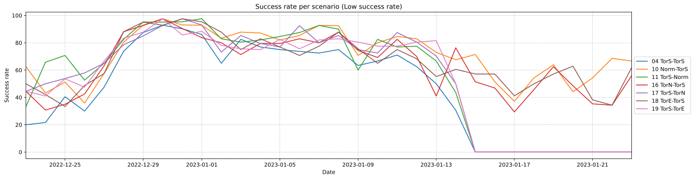
Note: Client C4 started to have a technical error from the 2023-01-15. That is the reason for 4 scenarios completely failing from that time and forward.

RTT in successful calls
Plot for RTT of video and audio on successful calls. Created in the RoundTripTimeBoxPlot notebook.


Jitter in successful calls
Plot for Jitter of video and audio on successful calls. Created in the JitterBoxPlot notebook.


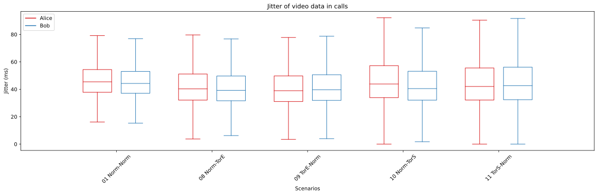
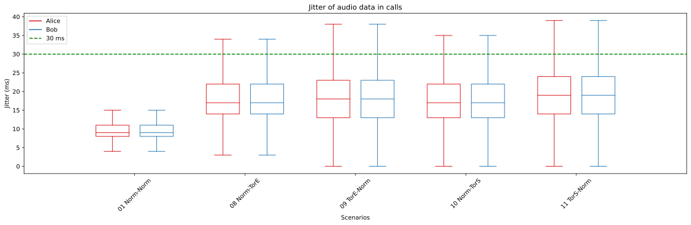
Average jitter buffer delay
Plot for Average jitter of video and audio on successful calls. Created in the JitterBufferDelayBoxPlot notebook
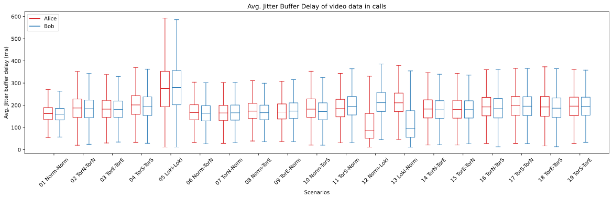

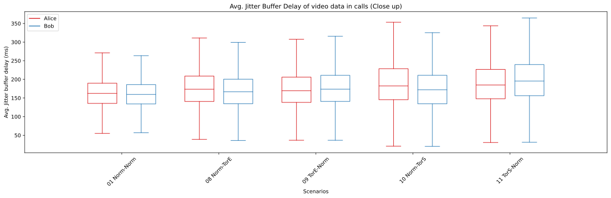
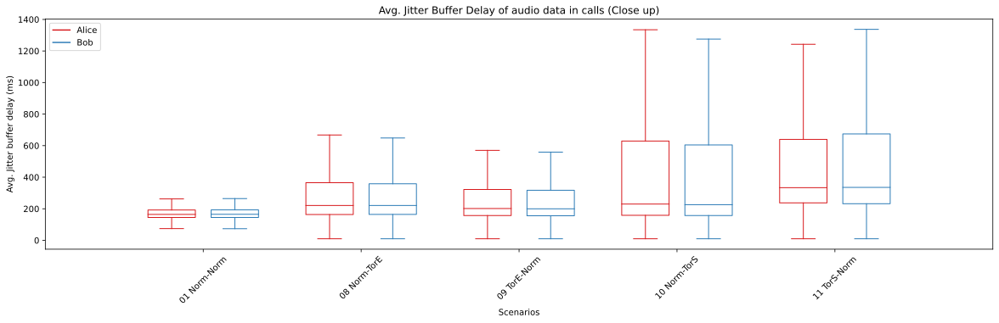
Bandwidth used
Plot for the total bandwidth used during successful calls. Created in the BandwidthUsedPlots notebook.

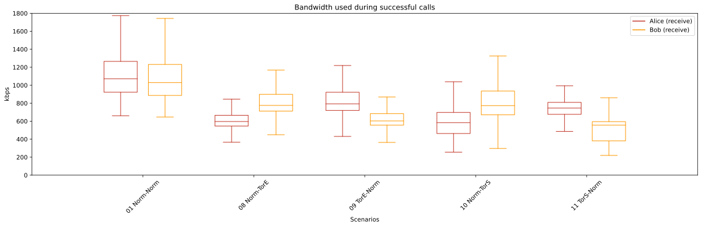


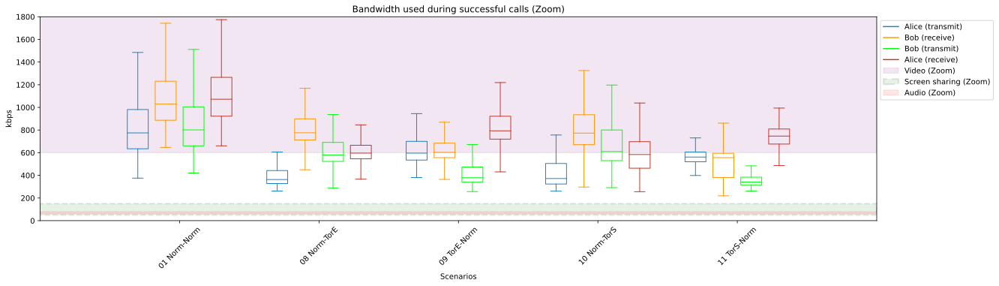
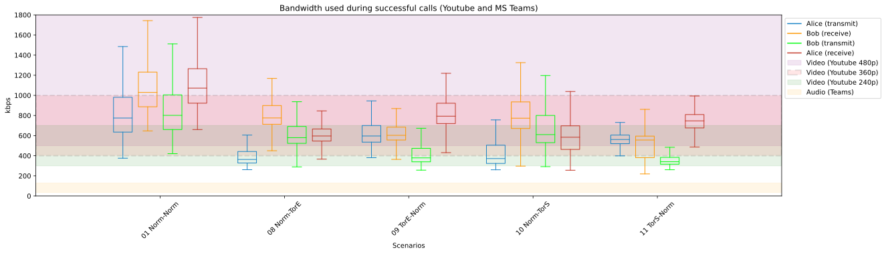
Validation
To validate the results it can be related to the metrics from the material in external material.
Graph of throughput in the Tor network during the experiment. Source

Graph of latencies in the Tor network during the experiment. Source